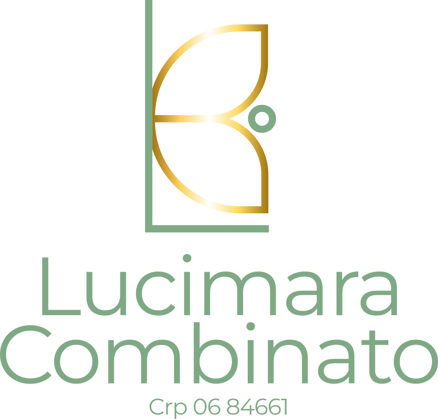

"Quero ter alguém com quem conversar,Agendar Consulta
Alguém que depois não use o que eu disse contra mim" Renato Russo
Sou Lucimara Combinato, psicologa clinica com CRP 06/84661, especializada em atendimento online. Minha abordagem e baseada na Fenomenologia Existencial, oferecendo um espaco seguro e acolhedor para voce explorar suas questoes pessoais.
Atendo brasileiros no exterior e pessoas que buscam flexibilidade no atendimento psicologico, sempre com foco na escuta empatica e no desenvolvimento do autoconhecimento.
Falar no WhatsAppA terapia online oferece a mesma qualidade do atendimento presencial, com a conveniencia de estar onde voce se sente mais confortavel.
Sessoes adaptadas a sua rotina, incluindo horarios flexiveis para brasileiros no exterior.
Atendimento no ambiente onde voce se sente mais seguro e confortavel.
Atendo brasileiros em qualquer lugar do mundo, mantendo nossa conexao cultural.
Plataformas seguras e confidenciais que respeitam todos os preceitos eticos da psicologia.
Depoimentos reais de pacientes que transformaram suas vidas
"A terapia online me proporcionou um espaco seguro para me conhecer melhor. Lucimara tem uma escuta muito acolhedora e me ajudou a superar momentos dificeis da minha vida."
"Como brasileiro morando no exterior, encontrar uma psicologa que me entendesse era fundamental. O atendimento online quebrou todas as barreiras geograficas."
"A abordagem fenomenologica existencial me ajudou a encontrar sentido nas minhas experiencias. Recomendo o trabalho da Lucimara para quem busca autoconhecimento."
"A Lucimara a cada dia me surpreende com seu profissionalismo e empatia, é uma excelente profissional, tem transformado meu ser! Estou muito satisfeita com o seu atendimento ❤️"
"A Lucimara é uma pessoa sensacional, excelente profissional, me faz realmente pensar e refletir sobre os momentos que venho passando na vida."
"Extremamente satisfeito com o ótimo trabalho da Lucimara, me sinto muito à vontade e acolhido para melhor autoconhecimento."
De o primeiro passo e sempre e mais dificil. Estou aqui para te acompanhar nessa caminhada de autoconhecimento e transformacao.
Envie uma mensagem pelo WhatsApp para conversarmos sobre suas necessidades
Escolha o melhor horário para você, com flexibilidade total
Sessão online de 50 minutos em ambiente seguro e acolhedor
Primeira consulta: Vamos nos conhecer e entender como posso te ajudar da melhor forma.
Atendimento seguro e profissional
Primeira consulta sem compromisso
Para brasileiros em qualquer lugar do mundo
Artigos e reflexoes sobre saude mental, bem-estar emocional
e crescimento pessoal para te acompanhar nessa jornada.
Ansiedade e querer resolver um problema que ainda nao aconteceu. A Ansiedade faz parte da vida e em niveis aceitaveis ela nos ajuda. Tenho uma prova importante e preciso estudar, agendei a viagens dos meus sonhos e estou ansioso para chegar a data. Ansiedade na medida adequada pode ser um combustivel em niveis altos ela nos paralisa.
E visivel que a ansiedade tem tomado conta da sociedade brasileira e tem nos levado ao pronto socorro com sintomas descritos como sensacao de morte, temos recorrido a medicacao com muita frequencia, estamos vivendo no modo ansioso. E preocupante o numero de jovens e ate criancas referindo-se a crises de ansiedade.
A ansiedade tem relacao direta com a insatisfacao da vida que estamos levando e a com sua finitude. Quando fixamos nossos pensamentos em algo do passado tendemos a ficar deprimidos e quando o voltamos excessivamente para o presente a tendencia e ficamos ansiosos. O ideal e tentar permanecer no presente. Voce sabe como fazer isso?
Luto e quando perdemos algo ou alguem que nos era muito valioso. Vivemos uma era onde e muito comum medicar a pessoa que esta enlutada, apesar do luto nao ser uma doenca.
A morte e a unica certeza que temos, porem, ela causa muito espanto. A gente se afasta da morte, como se ela nao fosse parte da vida, procuramos um culpado, e nao encarramos o fato de que a morte sempre foi inevitavel.
Viver a perda de uma pessoa amada e algo brutal e como perder um membro do corpo: um braco, uma perna. Acontece uma ruptura, uma parte de si foi embora.
O luto exige reflexao sobre o outro lado da vida e sobre o sentido dessa vida, saimos modificados dessa experiencia construimos um novo conceito de vida e de morte. Aprendemos a honrar nossos mortos.
Luto e uma experiencia individual, porem, nao precisa ser vivido sozinho.
Como era a vida no Brasil e qual a expectativa de morar em outros pais? O planeta e muito grande pra gente nascer e morrer no mesmo lugar.
A possibilidade de existir de outra maneira e deixar coisas tristes pra tras provoca entusiasmos e contentamento. Ha pessoas que comparam a nascer de novo praticamente voltamos a engatinhar. Um renascimento.
Viver fora do Brasil traz desafios emocionais unicos que vao alem da adaptacao pratica. A saudade, o choque cultural, a pressao de "dar certo" e a constante comparacao entre a vida atual e a que ficou para tras sao sentimentos comuns.
Como lidar com a culpa de estar longe da familia, como manter a identidade cultural sem se isolar com grupo de brasileiros, construir novos vinculos e lidar com o sentimento de nao pertencimento.
Transformar a experiencia de imigracao em crescimento pessoal e profissional e um desafio. A crise existencial que vem e a eterna duvida entre ficar ou quando voltar.
Estes sao apenas alguns dos temas que podemos explorar juntos em nossas sessoes. Cada jornada e unica e personalizada para suas necessidades.
Vamos conversar sobre seu momento
Estou aqui para esclarecer suas duvidas e te ajudar a dar o primeiro passo em direcao ao seu bem-estar.
Entre em Contato